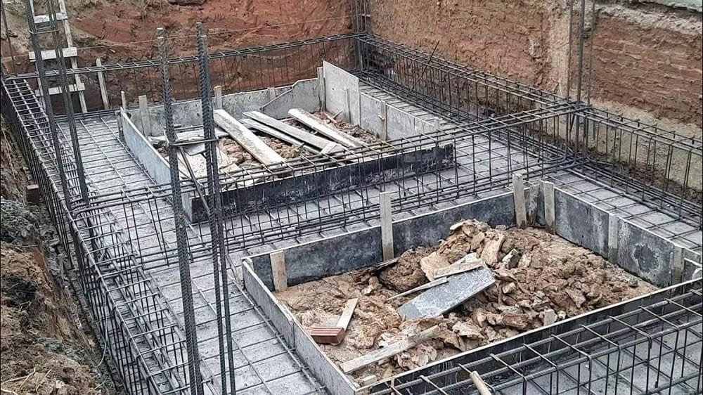
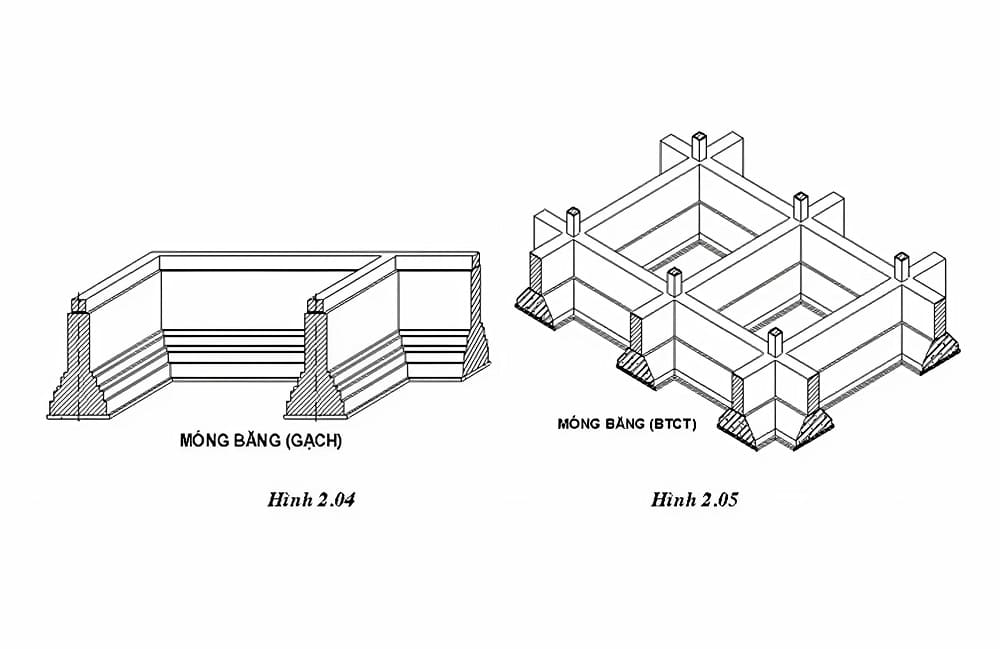
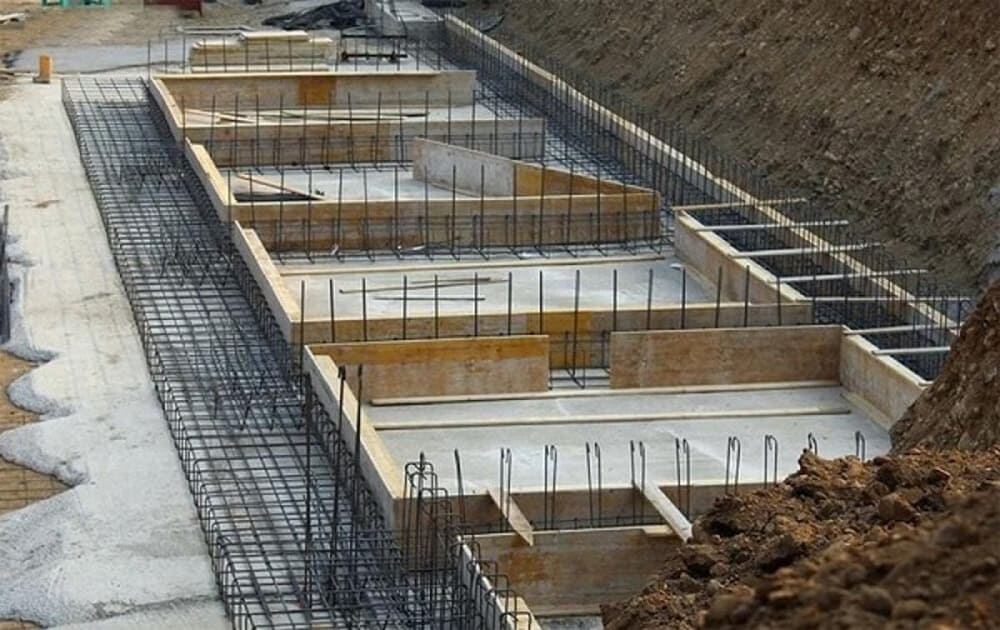
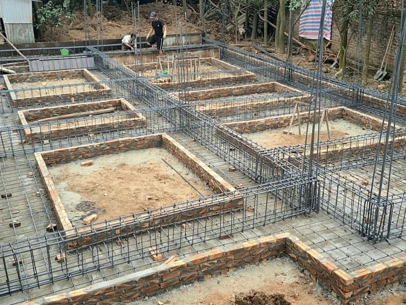
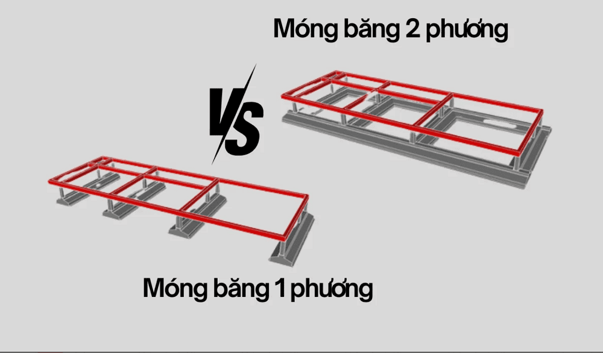
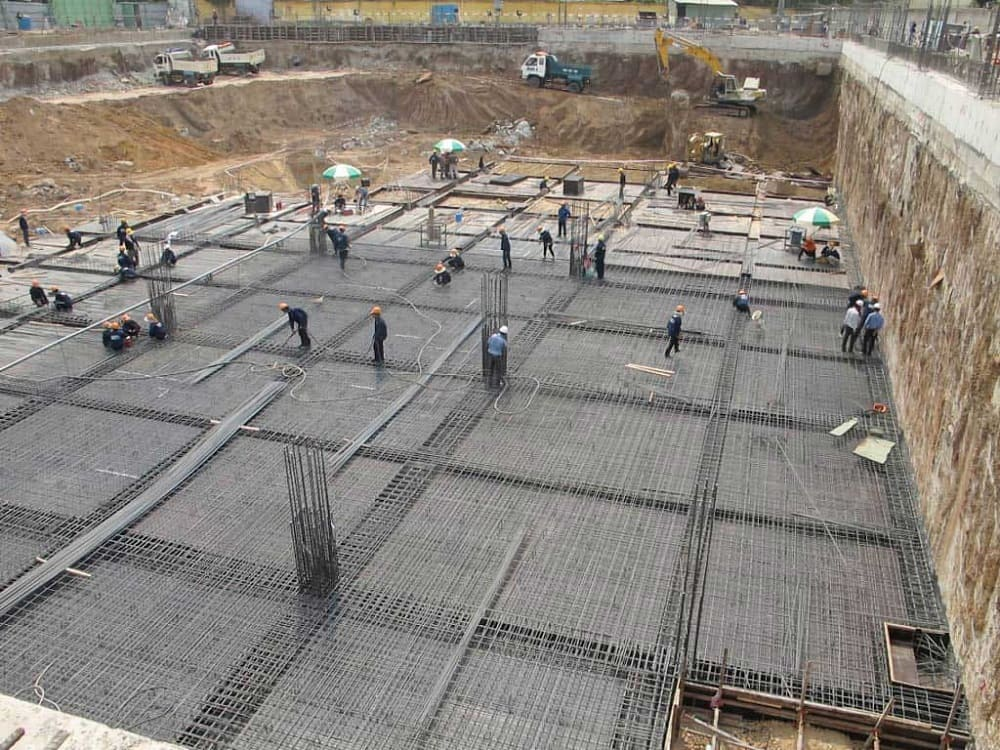

Móng băng là gì và vì sao loại móng này thường được sử dụng phổ biến trong xây dựng nhà ở dân dụng? Việc hiểu rõ đặc điểm, cấu tạo và ứng dụng của móng băng sẽ giúp gia chủ lựa chọn giải pháp nền móng phù hợp, đảm bảo độ bền vững cho công trình. Hãy cùng AVA Architects khám phá chi tiết trong bài viết dưới đây.
Xem thêm:
- Thủ tục xin giấy phép xây dựng thế nào? Lệ phí bao nhiêu?
- Cách nộp hồ sơ xin giấy phép xây dựng online tại Đà Nẵng
- Quy định PCCC căn hộ 3 tầng, 4 tầng, 5 tầng, 6 tầng, 7 tầng
Móng băng là gì?
Trước khi tìm hiểu móng băng là gì, cần nắm rõ khái niệm chung về móng nhà trong xây dựng. Móng nhà là phần kết cấu nằm ở dưới cùng của công trình, có nhiệm vụ tiếp nhận toàn bộ tải trọng từ phần thân nhà và truyền lực xuống nền đất bên dưới. Đây là bộ phận đóng vai trò quan trọng trong việc đảm bảo độ ổn định, an toàn và tuổi thọ của công trình. Trong thực tế, móng nhà được chia thành nhiều loại khác nhau, trong đó móng băng là một dạng móng khá phổ biến.

Móng băng là loại móng dạng dải giúp phân bố tải trọng đều và tăng độ ổn định cho công trình (C: Internet)
Móng băng là loại móng nông thường được sử dụng trong các công trình nhà ở dân dụng cũng như một số công trình quy mô vừa, đặc biệt là nhà phố hoặc nhà ống cao từ 2-5 tầng, nơi tường chịu lực đóng vai trò chính. Kết cấu của móng băng được thiết kế theo dạng dải dài chạy liên tục dưới tường hoặc các hàng cột, có thể bố trí song song hoặc giao nhau theo hình chữ thập để tăng khả năng chịu lực cho công trình.
So với móng đơn – loại móng chịu tải trọng tập trung tại từng cột, móng băng có cấu trúc liên kết theo dải liên tục nên giúp phân bố tải trọng đều hơn xuống nền đất. Nhờ đó, móng băng giúp tăng độ ổn định của công trình, hạn chế tình trạng lún lệch và góp phần đảm bảo sự bền vững lâu dài cho ngôi nhà, đặc biệt khi xây dựng trên nền đất có sức chịu tải không quá cao.
Móng băng phù hợp với loại công trình nào?
Móng băng được ứng dụng phổ biến trong các công trình nhà ở dân dụng, đặc biệt là nhà phố và nhà ống – nơi hệ tường thường đóng vai trò chịu lực chính cho toàn bộ công trình. Loại móng này thường phù hợp với những công trình có quy mô trung bình, điển hình là nhà từ 3 đến 5 tầng, nhờ khả năng phân bổ tải trọng đều và đảm bảo độ ổn định cho kết cấu.
Đối với các công trình nhỏ hơn như nhà cấp 4, nhà 1 tầng hoặc 2 tầng, phương án móng thường được ưu tiên là móng cốc hoặc móng đơn vì kết cấu đơn giản, chi phí thi công thấp và vẫn đáp ứng tốt yêu cầu chịu lực.

Móng băng thường phù hợp với nhà phố, nhà ống từ 2–5 tầng có tải trọng trung bình (C: Internet)
Ngoài ra, một số công trình khác như biệt thự hoặc biệt thự sân vườn cũng có thể sử dụng móng băng trong quá trình xây dựng. Tuy nhiên, trong thực tế, móng bè thường được lựa chọn nhiều hơn cho các công trình cao cấp này nhằm tăng khả năng chịu tải và hạn chế tình trạng lún không đều.
Việc quyết định sử dụng móng băng hay các loại móng khác phụ thuộc vào nhiều yếu tố như điều kiện địa chất của nền đất, tải trọng công trình cũng như quy mô thiết kế. Nhờ khả năng chịu lực ổn định và phân bố tải trọng hiệu quả, móng băng vẫn là giải pháp móng được áp dụng rộng rãi trong xây dựng nhà ở tại Việt Nam.
Xem thêm:
- Có nên xây tường gạch 2 lớp chống nóng không?
- Nên chọn bê tông tươi và bê tông tự trộn
- Quy trình đổ sàn bê tông đúng kỹ thuật, an toàn
Cấu tạo của móng băng
Cấu tạo của móng băng thường gồm ba bộ phận chính: lớp bê tông lót, bản móng và dầm móng. Mỗi thành phần đều đảm nhận một chức năng riêng, góp phần giúp hệ móng chịu lực tốt và đảm bảo độ ổn định cho công trình.
- Lớp bê tông lót: Đây là lớp bê tông mỏng nằm dưới cùng của móng, thường có độ dày khoảng 100mm. Lớp này có nhiệm vụ tạo bề mặt phẳng để thi công phần móng phía trên, đồng thời hạn chế sự xâm nhập của độ ẩm từ đất, giúp bảo vệ cốt thép và tăng độ bền cho kết cấu móng.
- Bản móng: Bản móng là phần tiếp nhận và truyền tải trọng trực tiếp từ công trình xuống nền đất. Kích thước bản móng thường phổ biến trong khoảng (900-1200) x 350 mm. Nhờ diện tích tiếp xúc lớn với nền đất, bản móng giúp phân bố lực đồng đều, giảm áp lực tập trung và hạn chế nguy cơ lún cục bộ.
- Dầm móng: Dầm móng có nhiệm vụ liên kết các bản móng và hệ cột, tạo thành một khối kết cấu thống nhất. Kích thước dầm móng thường vào khoảng 300 x (500-700) mm. Bộ phận này giúp tăng độ cứng cho hệ móng, đồng thời hạn chế hiện tượng lún lệch giữa các vị trí của công trình.
- Cốt thép móng băng: Hệ thống cốt thép được xem là phần quan trọng giúp tăng khả năng chịu kéo và chịu uốn cho móng băng. Cốt thép bao gồm thép dọc và thép đai, được bố trí theo đúng bản vẽ thiết kế nhằm đảm bảo kết cấu móng vững chắc và an toàn trong quá trình sử dụng.

Móng băng gồm lớp bê tông lót, bản móng và dầm móng chịu lực (C: Internet)
Một số thông số tham khảo của móng băng thường gặp trong xây dựng gồm:
- Độ dày lớp bê tông lót: khoảng 100 mm.
- Kích thước bản móng phổ biến: (900-1200) x 350 mm.
- Kích thước dầm móng phổ biến: 300 x (500-700) mm.
- Thép bản móng: Φ12a150.
- Thép dầm móng: thép dọc Φ18-Φ22, thép đai Φ8a150.
- Chiều sâu móng băng: với nhà 2 tầng thường từ 0.8m – 1.2m, còn nhà 3 tầng có thể sâu khoảng 1.5m hoặc hơn.
Vật liệu xây dựng móng băng
Trong quá trình thi công móng băng, bê tông cốt thép là vật liệu chủ đạo giúp tạo nên kết cấu vững chắc và đảm bảo khả năng chịu lực cho công trình. Việc lựa chọn loại bê tông có mác phù hợp với tải trọng và quy mô xây dựng là yếu tố quan trọng, góp phần nâng cao độ bền và tuổi thọ của hệ móng.

Móng băng thường được xây dựng từ bê tông cốt thép kết hợp cát, đá và xi măng (C: Internet)
Bên cạnh bê tông, cốt thép trong móng băng cũng giữ vai trò then chốt trong việc gia tăng khả năng chịu kéo và chống nứt cho kết cấu. Hệ thống thép cần được bố trí đúng theo bản vẽ thiết kế, đảm bảo đầy đủ về số lượng, kích thước cũng như khoảng cách theo tiêu chuẩn kỹ thuật. Các loại thép thường được sử dụng bao gồm thép dọc và thép đai, được liên kết với nhau thành khung thép chắc chắn nhằm tăng cường khả năng chịu lực cho móng. Chất lượng thép cũng như kỹ thuật lắp đặt có ảnh hưởng trực tiếp đến độ bền của toàn bộ hệ móng.
Ngoài hai vật liệu chính là bê tông và cốt thép, quá trình thi công móng băng còn cần sử dụng thêm các vật liệu khác như cát, đá dăm và xi măng để tạo lớp bê tông lót và thực hiện đổ bê tông móng. Việc lựa chọn vật liệu đạt tiêu chuẩn và thi công đúng kỹ thuật sẽ giúp móng băng đảm bảo độ ổn định, góp phần nâng cao độ bền và sự an toàn cho toàn bộ công trình.
Ưu và nhược điểm của móng băng
Ưu điểm
- Khả năng chịu lực tốt, hạn chế lún lệch: Móng băng được thiết kế theo dạng dải liên tục dưới tường hoặc hàng cột, giúp phân bố tải trọng đồng đều xuống nền đất. Nhờ đó, áp lực tại đáy móng được giảm đáng kể, hạn chế tình trạng lún không đều và giảm nguy cơ nứt tường trong quá trình sử dụng.
- Độ ổn định và bền vững cao: Hệ móng băng liên kết chặt chẽ các cột và tường thành một hệ kết cấu thống nhất, giúp tăng độ cứng và sự ổn định cho toàn bộ công trình. Điều này đặc biệt hiệu quả khi xây dựng trên những nền đất có khả năng chịu tải ở mức trung bình.
- Giảm áp lực tại đáy móng: Nhờ kết cấu chịu lực tốt và diện tích tiếp xúc với nền đất lớn, móng băng giúp giảm áp lực tập trung ở đáy móng. Điều này góp phần hạn chế hiện tượng nghiêng hoặc lún của công trình trong quá trình sử dụng lâu dài.
- Phân bổ tải trọng đồng đều: Cấu trúc của móng băng giúp liên kết các vị trí móng lại với nhau, từ đó phân tán trọng lượng của ngôi nhà một cách hợp lý. Nhờ vậy, hệ móng có khả năng chịu tải ổn định và đảm bảo an toàn cho công trình.
- Chi phí thi công hợp lý: So với các loại móng sâu như móng cọc hay móng bè, móng băng có kết cấu đơn giản và quy trình thi công không quá phức tạp. Điều này giúp tiết kiệm vật liệu và chi phí xây dựng, phù hợp với nhiều công trình nhà ở dân dụng.

Móng băng giúp phân bố tải trọng đều và tăng độ ổn định cho công trình (C: Internet)
Xem thêm:
- Dầm là gì? Khái niệm, phân loại và chức năng dầm
- Hồ sơ xin giấy phép xây dựng gồm những gì?
- Cốp pha là gì? Phân loại và vai trò của cốp pha
Nhược điểm
- Chiều sâu móng không lớn: Móng băng thuộc nhóm móng nông nên có chiều sâu chôn móng khá nhỏ. Vì vậy, trong một số trường hợp nền đất yếu hoặc tải trọng lớn, móng có thể gặp nguy cơ mất ổn định, dễ xảy ra hiện tượng trượt hoặc lật nếu không được thiết kế và gia cố đúng kỹ thuật.
- Khả năng chịu tải của lớp đất bề mặt hạn chế: Do móng băng chủ yếu truyền tải trọng xuống lớp đất gần bề mặt, nên nếu nền đất tại khu vực xây dựng có sức chịu tải kém thì khả năng chịu lực của toàn bộ hệ móng cũng sẽ bị ảnh hưởng. Điều này có thể làm giảm độ ổn định của công trình nếu không được xử lý nền đất phù hợp.
- Yêu cầu kỹ thuật thi công cao: Móng băng giữ vai trò quan trọng trong việc nâng đỡ toàn bộ công trình, vì vậy quá trình thiết kế và thi công cần được thực hiện chính xác theo tiêu chuẩn kỹ thuật. Điều này đòi hỏi đội ngũ kỹ sư và thợ thi công phải có kinh nghiệm chuyên môn cao để đảm bảo chất lượng và độ an toàn cho hệ móng.
Phân loại móng băng
Móng băng hiện nay có thể được phân loại dựa trên nhiều tiêu chí khác nhau như vật liệu cấu tạo, đặc tính độ cứng hoặc phương bố trí trong công trình. Cách phân loại này giúp các kỹ sư và đơn vị thi công dễ dàng lựa chọn loại móng băng phù hợp với điều kiện nền đất và yêu cầu thiết kế của từng công trình.
Theo vật liệu kết cấu
Dựa theo vật liệu cấu tạo, móng băng thường được chia thành hai loại phổ biến sau:
- Móng băng gạch: Đây là dạng móng truyền thống, được xây dựng bằng các viên gạch xếp chồng lên nhau và liên kết bằng vữa xây. Loại móng này thường được áp dụng cho những công trình quy mô nhỏ, nền đất ổn định và tải trọng công trình không quá lớn. Tuy nhiên, so với các loại móng hiện đại, móng băng gạch có khả năng chịu lực và độ bền thấp hơn.
- Móng băng bê tông cốt thép: Đây là loại móng băng được sử dụng phổ biến trong xây dựng hiện nay. Kết cấu gồm bê tông kết hợp với hệ cốt thép giúp tăng độ cứng, khả năng chịu lực và độ bền cho móng. Nhờ những ưu điểm này, móng băng bê tông cốt thép được ứng dụng rộng rãi trong nhiều loại công trình, đặc biệt là nhà ở dân dụng và các công trình có tải trọng lớn hơn.
Theo tính chất, độ cứng
Dựa theo tính chất độ cứng của kết cấu, móng băng thường được phân thành ba loại chính sau:
- Móng băng cứng: Đây là loại móng có độ cứng lớn và khả năng chịu lực cao, ít bị biến dạng khi chịu tác động từ tải trọng của công trình. Móng cứng thường được gia cố bằng hệ thống bê tông cốt thép chắc chắn, phù hợp với các công trình có quy mô lớn, nhà cao tầng hoặc những công trình yêu cầu độ ổn định cao.
- Móng băng mềm: Móng mềm có độ cứng thấp hơn, kết cấu đơn giản và ít được gia cố bằng cốt thép. Loại móng này có khả năng thích ứng tốt với sự biến đổi của nền đất, thường được áp dụng cho các công trình có tải trọng nhẹ hoặc những khu vực cần đặt móng ở độ sâu lớn.
- Móng băng hỗn hợp (móng kết hợp): Đây là dạng móng có độ cứng trung bình, nằm giữa móng cứng và móng mềm. Móng băng hỗn hợp thường được sử dụng trong các công trình có yêu cầu đặc biệt về kết cấu hoặc trong điều kiện thi công cần sự cân bằng giữa khả năng chịu lực và tính linh hoạt của móng.
Theo phương vị
Dựa theo phương bố trí của móng, móng băng thường được chia thành hai loại phổ biến sau:
- Móng băng một phương: Đây là loại móng có các dải móng chạy theo một hướng nhất định của công trình, có thể theo chiều dài hoặc chiều rộng. Móng băng một phương thường được áp dụng cho các công trình có kết cấu chịu lực tập trung theo một hướng chính, chẳng hạn như nhà có chiều dài lớn hoặc bố trí tường chịu lực theo một trục.
- Móng băng hai phương: Loại móng này được bố trí với các dải móng giao nhau theo hai phương vuông góc, tạo thành hệ kết cấu liên kết chặt chẽ. Nhờ khả năng chịu lực theo cả hai hướng, móng băng hai phương giúp tăng độ ổn định cho công trình và thường được sử dụng trong những công trình có diện tích lớn, kết cấu phức tạp hoặc xây dựng trên nền đất có khả năng chịu tải kém.

Móng băng 1 phương chạy theo một hướng, còn móng băng 2 phương được bố trí giao nhau theo hai hướng vuông góc (C: Internet)
So sánh móng băng với móng đơn, móng bè, móng cọc
Bên cạnh móng băng, trong xây dựng còn có nhiều loại móng nhà khác như móng đơn, móng bè và móng cọc. Mỗi loại móng được thiết kế để phù hợp với điều kiện địa chất, tải trọng và quy mô của từng công trình. Việc hiểu rõ sự khác nhau giữa móng đơn và móng băng, móng bè và móng băng hay móng cọc và móng băng sẽ giúp gia chủ và đơn vị thi công lựa chọn giải pháp nền móng phù hợp, đảm bảo độ bền vững cho công trình.
- Móng băng là dạng móng được bố trí thành các dải dài chạy theo tường hoặc hàng cột của công trình. Trong một số trường hợp, các dải móng có thể giao nhau tạo thành hệ lưới nhằm tăng khả năng phân bố tải trọng. Loại móng này thường được sử dụng cho các công trình nhà ở có quy mô trung bình, đặc biệt khi cần phân tán tải trọng đều xuống nền đất.
- Móng đơn (móng cốc) là loại móng có kết cấu đơn giản, được đặt riêng lẻ dưới từng cột hoặc cụm cột để chịu tải trọng tập trung. Loại móng này thường được áp dụng cho các công trình nhỏ, tải trọng nhẹ và nền đất có khả năng chịu lực tốt.
- Móng bè là một tấm bê tông cốt thép lớn trải rộng dưới toàn bộ diện tích công trình. Nhờ diện tích tiếp xúc với nền đất lớn, móng bè giúp phân tán tải trọng hiệu quả, thường được sử dụng trong các công trình có tải trọng lớn hoặc xây dựng trên nền đất yếu.
- Móng cọc là hệ móng gồm nhiều cọc được đóng hoặc ép sâu xuống lớp đất có khả năng chịu lực tốt. Loại móng này thường được sử dụng cho các công trình cao tầng hoặc những khu vực có nền đất rất yếu, giúp tăng độ ổn định và đảm bảo an toàn cho công trình trong thời gian dài.
| Tiêu chí | Móng băng | Móng đơn | Móng bè | Móng cọc |
| Loại công trình phù hợp | Nhà phố, nhà ống từ 2-5 tầng, công trình có tải trọng ở mức trung bình | Nhà cấp 4 hoặc các công trình nhỏ, tải trọng nhẹ | Biệt thự, nhà xưởng hoặc công trình có tải trọng lớn | Nhà cao tầng, công trình quy mô lớn với tải trọng rất lớn |
| Điều kiện đất nền | Đất có độ ổn định tương đối, sức chịu tải trung bình | Nền đất cứng, khả năng chịu lực tốt | Nền đất yếu, dễ lún hoặc bùn đất | Nền đất rất yếu, cần truyền tải trọng xuống lớp đất sâu hơn |
| Độ sâu đặt móng | Thuộc loại móng nông, thường khoảng 0.8m – 1.5m | Móng nông | Móng nông | Móng sâu (phụ thuộc chiều dài cọc) |
| Chi phí thi công | Chi phí ở mức trung bình | Chi phí thấp nhất | Chi phí tương đối cao | Chi phí cao nhất |
| Mức độ phức tạp khi thi công | Thi công ở mức trung bình | Thi công đơn giản | Thi công khá phức tạp | Thi công rất phức tạp, cần thiết bị và máy móc chuyên dụng |
| Khả năng chống lún lệch | Khả năng chống lún tốt, lún tương đối đồng đều | Khả năng chống lún kém, dễ xảy ra lún lệch | Khả năng chống lún rất tốt | Khả năng chống lún rất tốt |
So với móng đơn, móng băng có khả năng chịu lực tốt hơn nhờ kết cấu liên kết theo dải liên tục dưới tường hoặc hàng cột. Chính vì vậy, móng băng thường được sử dụng cho các công trình nhà ở có quy mô lớn hơn, đặc biệt là nhà nhiều tầng cần hệ móng ổn định và phân bố tải trọng đều.
Cả móng bè và móng băng đều là những giải pháp nền móng phổ biến trong xây dựng nhà ở và công trình nhiều tầng. Tuy nhiên, mỗi loại móng lại phù hợp với điều kiện khác nhau. Móng bè thường được lựa chọn khi công trình có tải trọng lớn hoặc được xây dựng trên nền đất yếu, cần phân tán tải trọng trên diện tích rộng. Trong khi đó, móng băng thích hợp với các công trình có tải trọng trung bình và nền đất tương đối ổn định.
Khi so sánh với móng cọc, móng băng có ưu điểm về chi phí thi công thấp hơn và quy trình xây dựng đơn giản hơn. Tuy nhiên, loại móng này không phải là lựa chọn tối ưu cho những khu vực có nền đất quá yếu hoặc các công trình cao tầng. Trong một số trường hợp đặc biệt, móng băng có thể được kết hợp với hệ cọc ép nhằm tăng khả năng chịu tải và nâng cao độ ổn định cho toàn bộ công trình.
Cách tính khối lượng bê tông và tải trọng móng băng
Công thức tính khối lượng bê tông móng băng
Khối lượng bê tông của móng băng được xác định bằng cách cộng tổng thể tích của các bộ phận cấu thành, bao gồm: bản móng, dầm móng và lớp bê tông lót. Việc tính toán chính xác khối lượng bê tông giúp dự trù vật liệu và chi phí thi công hiệu quả hơn.
Công thức tính tổng thể tích bê tông móng băng như sau:
V móng = V dầm + V bản + V lớp bê tông lót
Trong đó, thể tích của mỗi cấu kiện được tính theo công thức chung:
V = L × W × H
- L: Tổng chiều dài của cấu kiện
- W: Chiều rộng của cấu kiện
- H: Chiều cao hoặc độ dày của cấu kiện tương ứng
Dựa vào kích thước thực tế của từng bộ phận trong bản vẽ thiết kế, có thể áp dụng công thức trên để tính toán chính xác khối lượng bê tông cần sử dụng cho móng băng.
Công thức ước tính nhanh tải trọng truyền xuống móng
Tải trọng tác động lên nền móng công trình bao gồm hai thành phần chính: tải trọng tĩnh và tải trọng hoạt tải. Trong đó, tải trọng tĩnh là trọng lượng của các bộ phận cấu tạo như tường, sàn, mái…, còn hoạt tải là tải trọng phát sinh từ con người, nội thất hoặc các vật dụng trong quá trình sử dụng.
Trong xây dựng nhà ở dân dụng, người ta thường sử dụng công thức ước tính nhanh tải trọng dựa trên diện tích sàn như sau:
P tải = S sàn × H tầng × K
Trong đó:
- S sàn: Diện tích sàn của công trình (m²).
- H tầng: Tổng số tầng của ngôi nhà.
- K: Hệ số tải trọng, thường dao động từ 1.2 – 1.5 tấn/m² sàn, tùy thuộc vào vật liệu xây dựng, mức độ hoàn thiện và loại công trình.
Cần lưu ý rằng đây chỉ là phương pháp tính toán sơ bộ nhằm ước lượng tải trọng trong giai đoạn ban đầu. Để đảm bảo độ chính xác và an toàn cho công trình, việc tính toán chi tiết cần được thực hiện bởi kỹ sư kết cấu, dựa trên kết quả khảo sát địa chất và các tiêu chuẩn thiết kế xây dựng hiện hành.
Quy trình xây dựng móng băng đúng kỹ thuật
Để đảm bảo móng băng đạt chất lượng và độ bền vững cao, quá trình thi công cần được thực hiện theo một quy trình kỹ thuật rõ ràng. Mỗi công đoạn phải được tiến hành cẩn thận và tuân thủ đúng tiêu chuẩn xây dựng nhằm đảm bảo nền móng ổn định và an toàn cho toàn bộ công trình.
Bước 1: Giải phóng mặt bằng
Đơn vị thi công tiến hành chuẩn bị mặt bằng bằng cách vệ sinh và dọn dẹp khu vực xây dựng, loại bỏ cây cối, rác thải hoặc các vật cản để tạo điều kiện thuận lợi cho quá trình thi công. Sau đó, vị trí hố móng và điểm đóng cọc sẽ được xác định chính xác bằng các thiết bị đo đạc chuyên dụng như máy định vị GPS.
Bước 2: San lấp mặt bằng móng băng
Người thợ sẽ tiến hành san gạt mặt bằng, chuyển phần đất ở vị trí cao xuống những khu vực thấp theo đúng bản vẽ móng băng đã được thiết kế. Sau đó, các trục định vị công trình sẽ được xác định và đánh dấu trên mặt đất để làm cơ sở cho quá trình thi công.
Tiếp theo, công đoạn đào hố móng được thực hiện cẩn thận nhằm đảm bảo kích thước và hình dạng đúng với bản vẽ thiết kế. Trong quá trình đào, cần thường xuyên kiểm tra độ sâu cũng như độ thẳng của hố móng để đảm bảo móng băng được thi công ổn định và chính xác. Nếu trong hố móng xuất hiện nước, cần sử dụng máy bơm để hút hết nước trước khi tiếp tục các bước thi công tiếp theo.

Thi công móng băng gồm đào móng, lắp cốt thép – cốp pha và đổ bê tông (C: Internet)
Bước 3: Chuẩn bị vật liệu cốt thép
Trong thi công xây dựng, cốt thép có thể được gia công sẵn tại nhà máy trước khi đưa đến công trình. Tuy nhiên, phần thép sử dụng cho móng cần đảm bảo đúng số lượng và quy cách theo yêu cầu thiết kế. Ngoài ra, bề mặt cốt thép phải được vệ sinh sạch sẽ, không dính bùn đất, dầu mỡ hay gỉ sét để đảm bảo chất lượng liên kết với bê tông.
Bước 4: Lắp ráp cốp pha và nghiệm thu
Đây là một trong những công đoạn quan trọng nhất trong quá trình thi công móng, bởi nó ảnh hưởng trực tiếp đến độ bền và sự ổn định của công trình. Cốp pha móng băng cần được lắp đặt chắc chắn, đúng kỹ thuật để đảm bảo kích thước và hình dạng của kết cấu bê tông theo đúng bản vẽ thiết kế.
Trong quá trình thi công, cần sử dụng vật liệu cốp pha đạt chất lượng và kiểm tra cẩn thận các vị trí liên kết nhằm tránh hiện tượng biến dạng hoặc rò rỉ bê tông khi đổ. Đồng thời, hệ cốp pha cũng phải đủ độ cứng và khả năng chịu lực để chống lại áp lực của bê tông tươi trong suốt quá trình thi công.
Bước 5: Đổ bê tông
việc lắp đặt cốt thép và cốp pha. Theo yêu cầu kỹ thuật, bê tông cần được đổ theo nguyên tắc từ vị trí xa đến gần, đồng thời không đứng lên thành cốp pha trong quá trình thi công dù hệ cốp pha đã được gia cố chắc chắn.
Quá trình đổ bê tông phải được thực hiện liên tục và đều để đảm bảo kết cấu móng đồng nhất và tránh hiện tượng phân tầng. Trong khi thi công, cần sử dụng máy đầm rung để loại bỏ bọt khí và các khoảng rỗng bên trong, giúp bê tông được nén chặt và lấp đầy toàn bộ khuôn cốp pha.
Sau khi hoàn thành việc đổ bê tông, công đoạn bảo dưỡng móng cũng rất quan trọng. Bê tông cần được giữ ẩm thường xuyên trong khoảng 7-10 ngày để đạt cường độ tối đa và đảm bảo độ bền lâu dài cho nền móng công trình.
Lưu ý thi công và nghiệm thu móng băng
- Lựa chọn phương án thiết kế phù hợp: Trước khi tiến hành thi công móng băng, cần tính toán kỹ lưỡng và lựa chọn loại móng phù hợp với đặc điểm công trình. Phương án thiết kế phải đảm bảo khả năng chịu tải tốt, đồng thời tối ưu chi phí xây dựng.
- Khảo sát địa chất khu đất: Khảo sát nền đất là bước quan trọng giúp đánh giá chính xác điều kiện địa chất tại khu vực xây dựng. Từ kết quả khảo sát, kỹ sư có thể đưa ra phương án xử lý nền móng và kế hoạch thi công hiệu quả hơn.
- Lựa chọn vật liệu xây dựng: Đối với các công trình yêu cầu khả năng chịu lực cao, móng băng thường được thi công bằng bê tông cốt thép. Việc sử dụng vật liệu đạt tiêu chuẩn sẽ giúp tăng độ bền và đảm bảo sự ổn định lâu dài cho công trình.
- Tính toán và kiểm soát chi phí: Chi phí thi công là yếu tố quan trọng cần được xem xét ngay từ đầu. Việc dự trù ngân sách hợp lý sẽ giúp lựa chọn được thiết kế và vật liệu phù hợp, tránh phát sinh chi phí trong quá trình xây dựng.
- Xác định kích thước móng băng hợp lý: Kích thước của móng băng đóng vai trò quan trọng trong việc đảm bảo khả năng chịu lực và độ ổn định của công trình. Các yếu tố cần xem xét khi xác định kích thước móng bao gồm tải trọng công trình (phụ thuộc vào số tầng và vật liệu xây dựng), điều kiện địa chất của nền đất như sức chịu tải và độ lún, cũng như loại móng băng được lựa chọn.
Hy vọng qua bài viết trên, bạn đã hiểu rõ móng băng là gì, cấu tạo, ưu nhược điểm cũng như cách lựa chọn loại móng phù hợp cho từng công trình. Việc thiết kế và thi công móng băng đúng kỹ thuật sẽ giúp đảm bảo độ bền vững, an toàn và tuổi thọ lâu dài cho ngôi nhà. Nếu bạn đang tìm kiếm đơn vị tư vấn thiết kế và thi công chuyên nghiệp, hãy liên hệ AVA Architects để được đội ngũ kiến trúc sư hỗ trợ giải pháp nền móng tối ưu cho công trình của mình.
- Market Analyst
- Mỹ Vân là Chuyên viên Phân tích Thị trường, đảm nhận vai trò nghiên cứu và phân tích chuyên sâu các xu hướng của ngành kiến trúc, loại hình dự án và thị trường bất động sản cho AVA Architects. Vân đã và đang hỗ trợ AVA Architects liên tục đổi mới và đưa ra quyết định chiến lược chính xác, đồng thời cung cấp cho khách hàng những góc nhìn giá trị để đưa ra lựa chọn đầu tư hiệu quả nhất. Tất cả đều hướng tới mục tiêu củng cố vị thế tiên phong của AVA và cùng khách hàng kiến tạo nên những giá trị bền vững cho tương lai.
 Blog thiết kế AVA14/09/202699+ Mẫu biệt thự phố đẹp, hiện đại, xu hướng năm 2026
Blog thiết kế AVA14/09/202699+ Mẫu biệt thự phố đẹp, hiện đại, xu hướng năm 2026 Blog thiết kế AVA10/09/2026999+ mẫu biệt thự đẹp đẳng cấp, sang trọng nhất 2026
Blog thiết kế AVA10/09/2026999+ mẫu biệt thự đẹp đẳng cấp, sang trọng nhất 2026 Blog thiết kế AVA09/09/2026Mẫu biệt thự hiện đại sang trọng, hiện đại 2026
Blog thiết kế AVA09/09/2026Mẫu biệt thự hiện đại sang trọng, hiện đại 2026 Blog thi công AVA28/04/2026Lợi ích khi xây nhà trọn gói bạn nhất định phải biết
Blog thi công AVA28/04/2026Lợi ích khi xây nhà trọn gói bạn nhất định phải biết